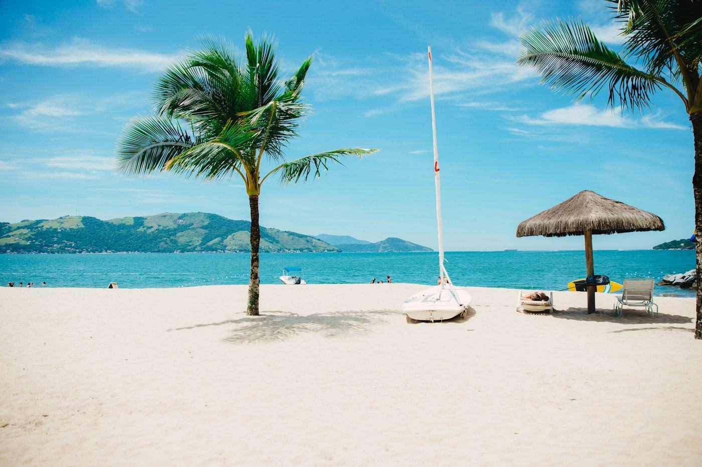
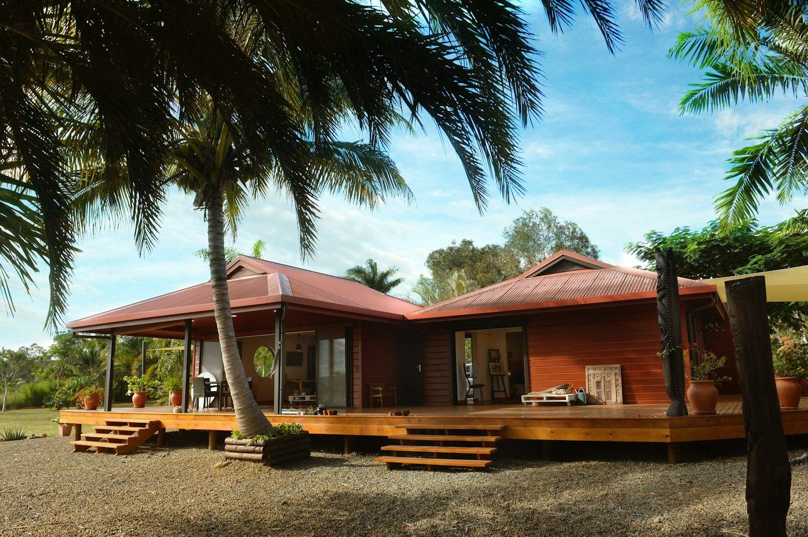
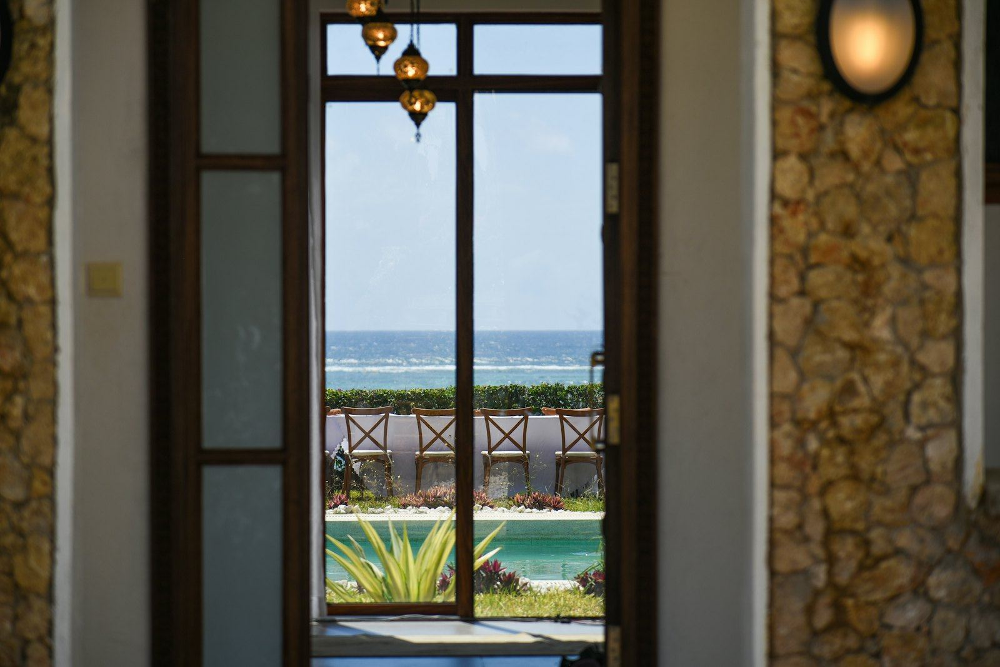

Journée à la plage
Traversée aller-retour, cocktail de bienvenue, déjeuner, plage et transats.
dès40 000 FCFApar adulte
- Navette aller-retour depuis Michel Marine
- Cocktail de bienvenue
- Déjeuner (entrée, plat, dessert)
- Transats et parasols

Une journée hors du temps ou un week-end entre océan et rivières : traversée, déjeuner de la mer, plage, soins et nature.
Traversée aller-retour, cocktail de bienvenue, déjeuner, plage et transats.
Navette, nuit en chambre double, petit-déjeuner, plage et baignade.
Le grand week-end : navette, nuit, tous les repas et une activité offerte.
Tarifs enfants sur demande et dans le calculateur. Offres spéciales annoncées sur nos réseaux.


Décorées avec goût de pièces d'art gabonais, nos chambres et suites offrent tout le confort pour une nuit loin du bruit de la capitale.
Voir les chambres« Une journée hors du temps à 15 minutes de Libreville. Service à l'écoute, poisson braisé délicieux, on reviendra ! »
« Les enfants ont joué toute la journée sur la plage, nous avons profité du calme et de la cuisine. Chambres décorées avec goût. »
« Voir une tortue luth pondre sur la plage de Pongara, c'est magique. Merci au guide et à toute l'équipe. »
Départ à 9 h 45 depuis Michel Marine (Libreville). Réservez votre journée ou votre week-end, nous confirmons sur WhatsApp.